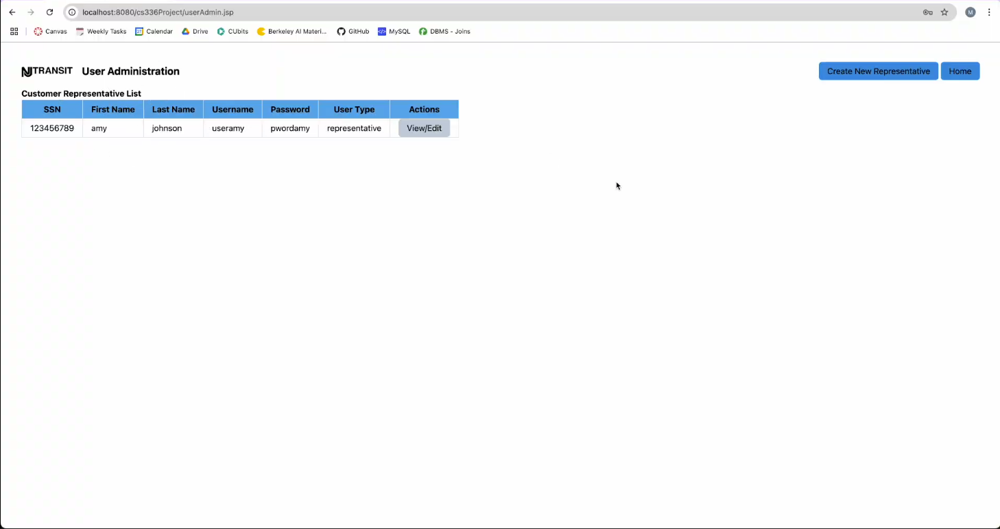
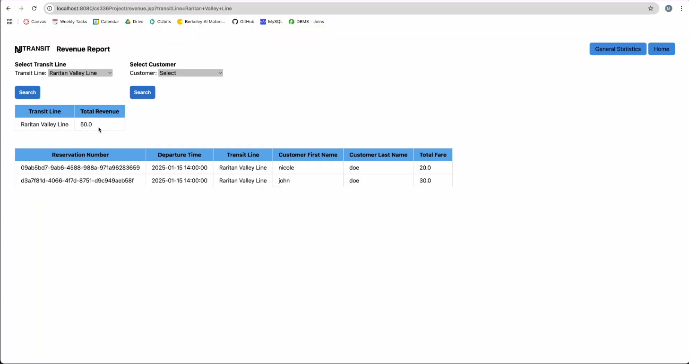

September 2024 – December 2024
Developed a full-stack web application allowing users to reserve, view, and modify train bookings, with backend database reporting features for performance tracking.
MySQL, JSP, HTML, CSS, JavaScript
Train ticket booking processes often require dynamic interfaces linked to robust backend databases. The system needed to handle user input, validate reservations, and support reporting.
Built JSP-based server-side pages integrated with a MySQL database schema, and structured data entry forms for CRUD operations.
Code available upon request due to academic policies.
 